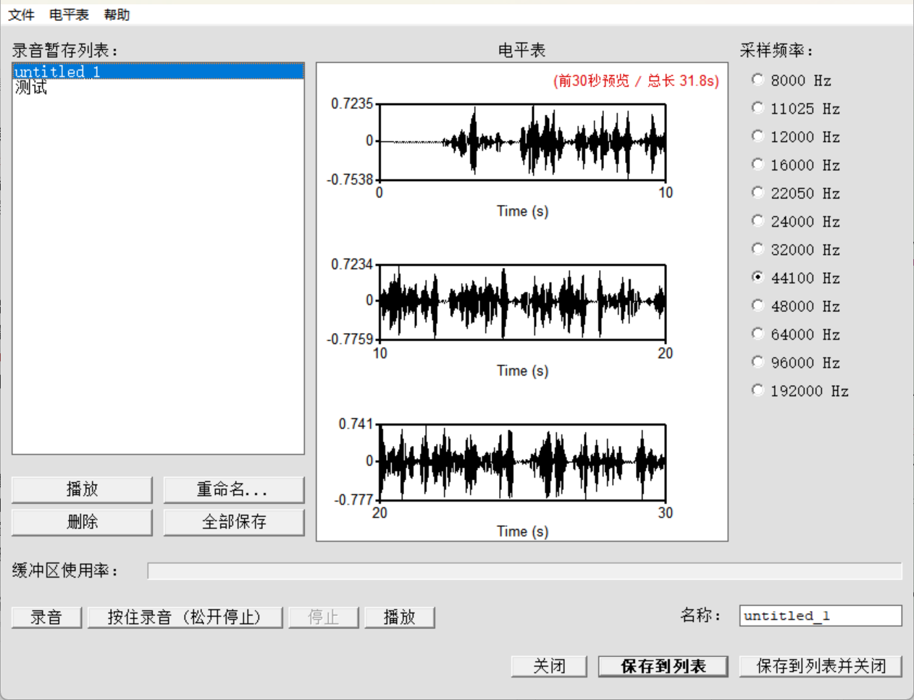

对象列表
- 1. Sound 软件特性
- 2. Package 下载安装
- 3. Manual 帮助手册
- 4. Table 术语对照
- 5. Recorder 录音窗口
常用操作
功能导航
Praat 简体中文本地化版本
基于 Praat 官方内核构建，提供完整中文界面与帮助手册。针对中文排版、拖拽打开、录音暂存与多对象批量操作深度优化。
完整界面汉化
菜单栏、参数对话框及设置面板全量中文，支持一键切换中英文。
帮助手册汉化
内置帮助手册主要页面全量翻译为中文，排版与滚动自适应优化。
术语对照表
主窗口常驻对照表按钮，随时核对语音学专业名词中英原词。
文件拖拽打开
Windows 下支持音频（.wav）、标注（.TextGrid）直接拖入载入。
录音窗口增强
按住录音模式、暂存列表自动递增编号与分层波形预览。
多对象批量重命名
选中多个对象时自动显示批量重命名工具，支持统一前后缀与序号递增。

Praat 简体中文主窗口与常用固定操作区
下载 Praat 简体中文版
绿色免安装，解压即用。
帮助手册汉化与排版优化
内置帮助手册主要页面已全量翻译为中文，图文教程在不同窗口尺寸下均能自适应流式呈现，方便查阅与学习。

内置帮助手册实际运行效果
常用语音学与 Praat 术语中英对照表
收录核心语音学、数据结构、信号处理与合成算法的标准中英文对照，方便文献阅读与脚本编写。
| 中文术语 | 英文原词 | 分类 | 说明 |
|---|---|---|---|
| 基频 / 音高 | Pitch / F0 | 核心声学 | 声带振动的基频频率，单位为赫兹 (Hz) |
| 音高上限 / 下限 | Pitch ceiling / floor | 参数设置 | 音高分析算法搜索的最高与最低频率限制范围 |
| 共振峰 | Formant (F1, F2...) | 核心声学 | 声道共鸣腔产生的特定共振频率峰值与带宽 |
| 音强 / 振幅 | Intensity / Amplitude | 核心声学 | 声音的能量强度 (dB) 与振幅波形包络 |
| 语图 / 声谱图 | Spectrogram | 信号显示 | 呈现时间、频率和能量三维关系的经典分析谱图 |
| 频谱 / 频谱切片 | Spectrum / Spectral slice | 频域分析 | 特定时间点上的瞬时频域能量分布切片 |
| 脉冲 / 声门脉冲 | Pulses / Glottal pulses | 声门活动 | 对应声带振动周期的离散脉冲时间点序列 |
| 谐噪比 | Harmonicity / HNR | 音质分析 | 声音信号中周期谐波成分与非周期噪声成分的比值 (dB) |
| 音高微扰 / 振幅微扰 | Jitter / Shimmer | 音质分析 | 周期与振幅的微小随机波动，用于嗓音病理评估 |
| 浊音 / 清音 | Voiced / Voiceless | 发音学 | 发音时声带参与振动的状态 / 声带不振动 |
| 摩擦 / 送气 / 气声 | Frication / Aspiration / Breathiness | 发音与音质 | 声道狭窄湍流噪音 / 释放后呼出气流 / 声带微开产生的气化音 |
| 声道 | Vocal Tract | 生理声学 | 从声带至唇齿的发音共鸣通道（咽腔、口腔、鼻腔） |
| 声音对象 / 长声音 | Sound / LongSound | 核心数据 | 普通内存音频对象 / 超长流式读取音频对象 |
| 文本标注格 | TextGrid | 标注结构 | Praat 用于分层标注语音时间段与点事件的标准格式 |
| 层 / 标注轨 | Tier | 标注层级 | 在时间轴上相互独立平行的分层标注轨道 |
| 区间层 / 点层 | Interval Tier / Point Tier | 标注层级 | 包含起止时间的区间标注轨 / 单个离散时间点的标记轨 |
| 区间 / 边界 | Interval / Boundary | 标注元素 | 区间层中的单个时间段 / 切分音段的起止时间标记点 |
| 点过程 | PointProcess | 数据结构 | 记录离散时间点序列（如基频脉冲）的底层对象 |
| 操控对象 | Manipulation | 操纵结构 | 结合基频层与时长层、用于重合成与变形修改的对象 |
| 音高层 / 音强层 | PitchTier / IntensityTier | 层级对象 | 独立的音高变化曲线层 / 独立的音强包络层 |
| 时长层 / 振幅层 | DurationTier / AmplitudeTier | 层级对象 | 用于局部变速的时长因子层 / 振幅缩放控制层 |
| 字符串列表 / 实数表 | Strings / TableOfReal | 统计数据 | 文本与文件名列表对象 / 多维数值统计矩阵对象 |
| 自相关 / 互相关 | Autocorrelation / Cross-correlation | 周期算法 | 音高提取经典算法，计算信号自身的周期重复性 |
| 线性预测编码 | LPC (Burg / Autocorrelation) | 谱估计算法 | 用于分离声道共鸣与提取共振峰频率/带宽的核心算法 |
| 预加重 / 去加重 | Pre-emphasis / De-emphasis | 滤波预处理 | 提升高频能量以补偿声门辐射滚降 / 还原原始频响 |
| 谱重心 / 频谱倾斜 | Centre of gravity / Spectral tilt | 频域特征 | 频谱能量分布的加权中心频率 / 频谱高低频滚降斜率 |
| 长期平均谱 | LTAS (Long-term average spectrum) | 频域统计 | 较长语音段平均频域能量分布，反映发音特质 |
| 梅尔倒谱系数 | MFCC | 特征工程 | 模拟人耳听觉梅尔尺度的倒谱特征系数 |
| 动态时间规整 | DTW | 模式匹配 | 用于非线性对齐不同语速语音发音的动态时间算法 |
| PSOLA 语音操纵 | PSOLA (Pitch-Synchronous Overlap-Add) | 语音变换 | 基频同步重叠相加，改变语速与音调而不改变音色 |
| 声源-滤波器合成 | Source-filter synthesis | 语音合成 | 结合声门波源与声道滤波器模型生成人工语音 |
| 发音合成 | Articulatory synthesis | 语音合成 | 模拟发音器官生理结构与肌肉运动生成发音 |
| Klatt 声学合成网格 | KlattGrid | 语音合成 | 经典级联/并联多共振峰声学参数合成模型 |
| 耳蜗图 / 倒谱图 | Cochleagram / PowerCepstrogram | 高级谱图 | 内耳基底膜响应听觉图 / 倒频域声门声道分离图 |
录音窗口增强
新增按住录音模式（松开即存）、暂存列表自动递增编号，音频超过 10 秒自适应分层显示。

录音窗口实际界面